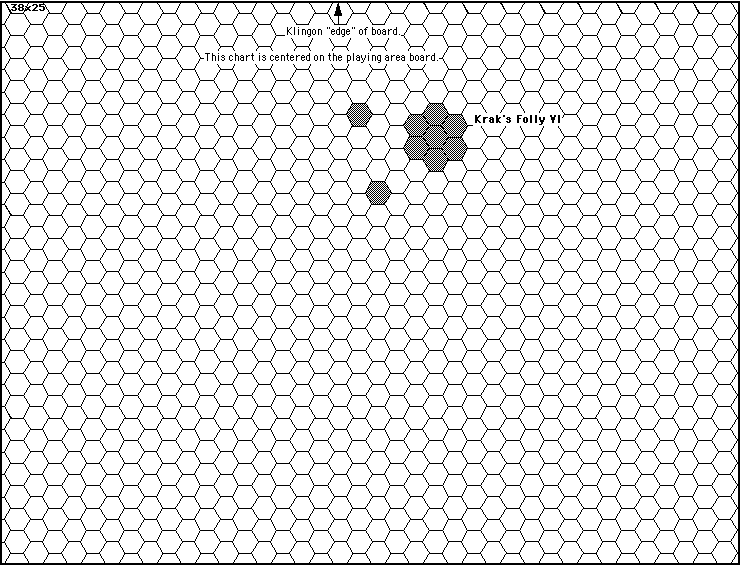

Scenario 10, prepared by David Ternes
Map.
There is one planet (Krak's Folly VI) with two moons as shown on the setup chart.

Setup.
Each force may place its most advanced ship 15 hexes in from the outer edge of the board.